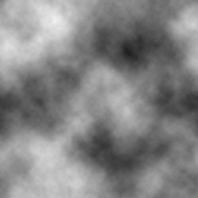
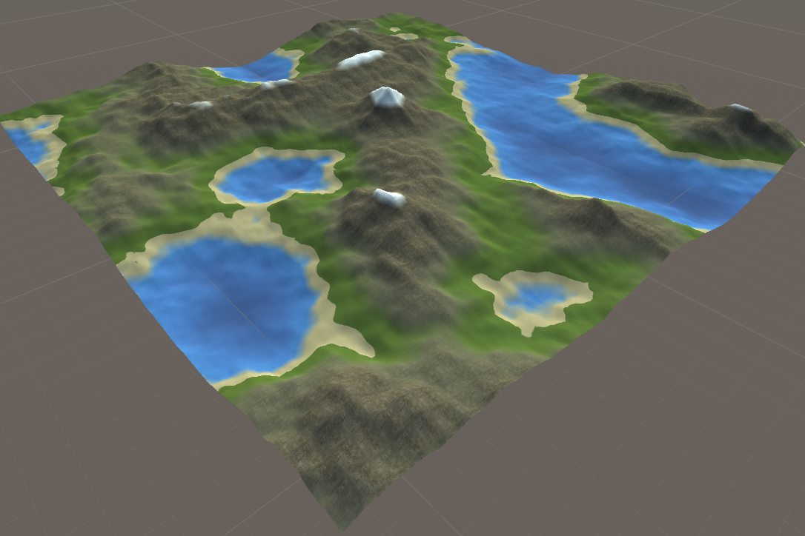
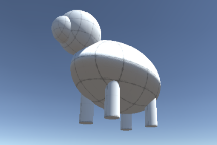
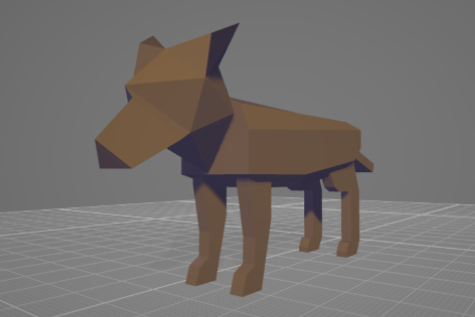
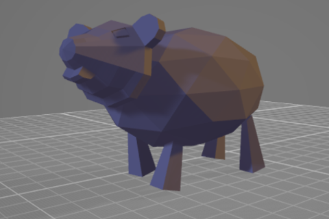
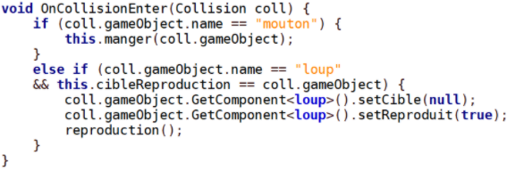
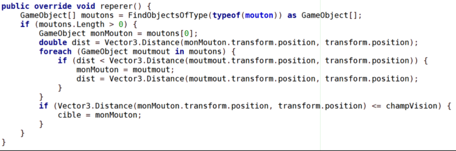

Génération procédurale d'un environnement en 3D
Lors de mon troisième semestre de DUT Informatique, j'ai participé à ce projet qui est très différent de ce que j'avais fait jusque-là. Au sein d'une équipe de six personnes, j'ai travaillé à la mise en place d'un programme générant un terrain en 3D avec reliefs de manière aléatoire et infinie. L'idée était également de mettre en place un système de biomes et de zones ainsi que des entités interagissant entre elles.
Génération du terrain
L'utilisation d'un bruit de Perlin (cf image ci-dessus) et la combinaison de plusieurs fréquences de celui-ci a permis d'aboutir à un terrain similaire à celui visible ci-dessous. Chaque zone est représentée par un nombre réel dont la valeur détermine la hauteur du pixel.
Modélisation des entités
Sur Unity, il est possible de disposer des éléments en 3D sur une scène pour ensuite leur attribuer des composants. Il est également possible d'importer directement des modèles 3D préfabriqués. Pour des raisons de simplicité, les modèles des entités ont été réalisés via le logiciel Blender.
  Programmation des entités
Unity permet d'affecter à des objets en 3D des composants. Cela peut par exemple être des Boîtes de collisions pour gérer les contacts avec un objet, ou un script pour déterminer son comportement. Après une répartition des rôles, c'est moi qui me suis occupé de programmer les scripts des entités.
Celles-ci comprennent des loups mangeant des moutons, eux-même mangeant des brins d'herbe. Cela influe sur leurs différentes charactéristiques : leurs points de vie (hp) ou leur vitesse. Ils possèdent également un champ de vision (représenté par un rayon de cercle) pour pouvoir repérer leurs proies, ainsi qu'un sexe généré aléatoirement à la création.
Les scripts ont été développés en Java puis implémentés en C#.
 